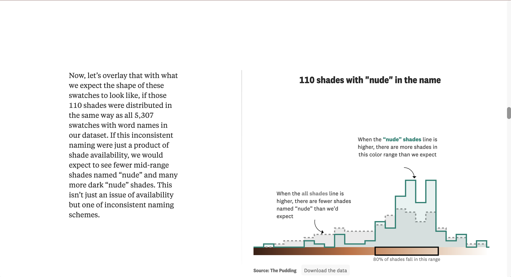
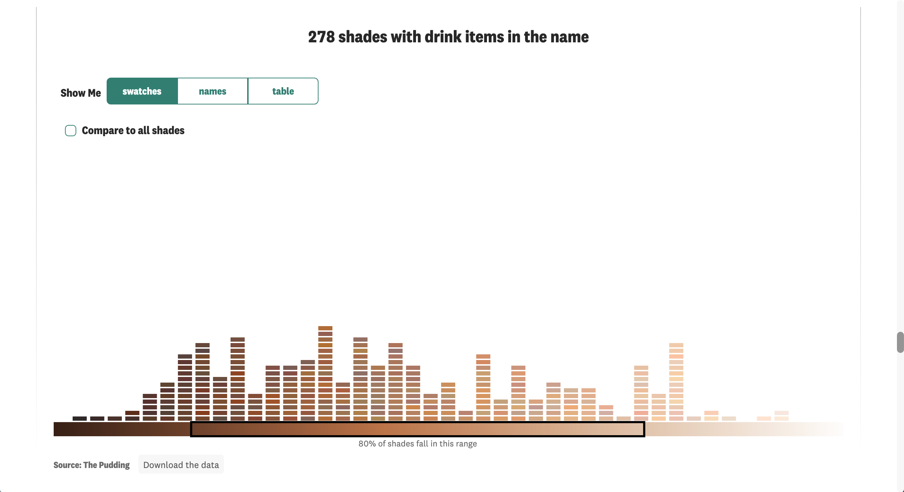
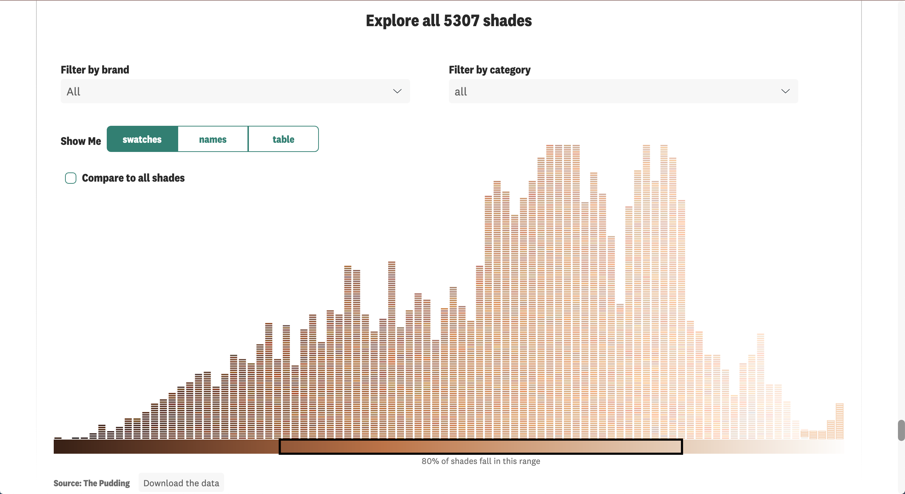
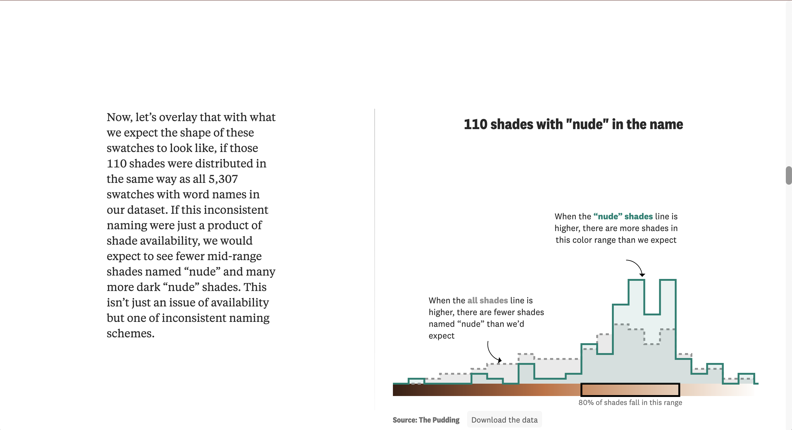
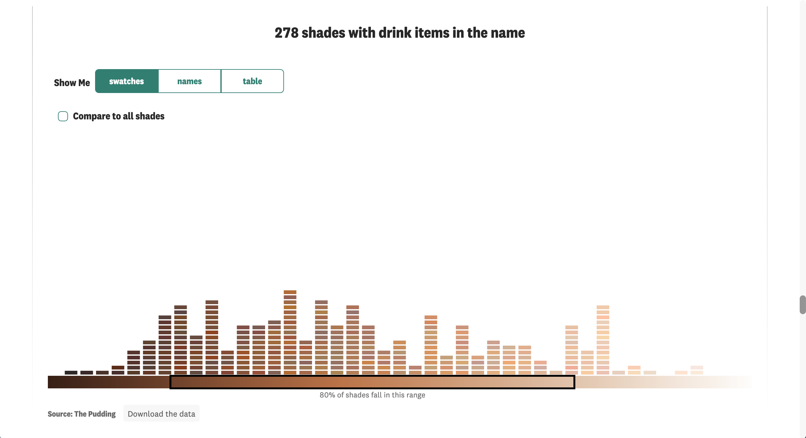
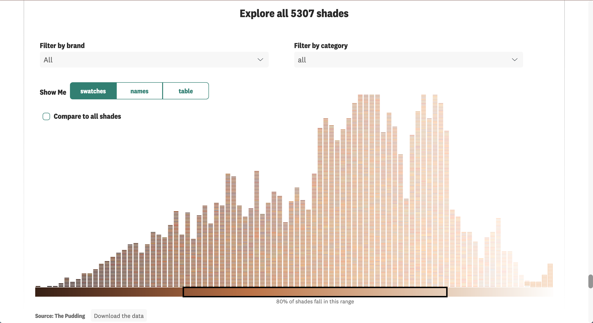

Screenshots


There are 6,816 foundation shades on Sephora & Ulta’s websites. Looking at how all of those shades are named revealed something many people of color already knew: the beauty industry is full of microaggressions & anti-Black bias. This project was a deep dive into the types of names assigned to various shades of foundation in two of the biggest beauty retailers in the US.
This story was in collaboration with freelance contributor Ofunne Amaka. As the creator of both CocoaSwatches and the app The BASEics, Ofunne is a subject-matter expert in this space. She helped me to structure the story and wrote the bulk of the copy.
